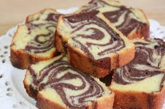

Queque Marmolado

Ingredientes
- 2 tazas de harina sin polvos de hornear
- 1 1/4 cucharadita de polvos de hornear
- 1/2 cucharadita de sal
- 12 cucharadas o 180 gramos de mantequilla sin sal a temperatura ambiente
- 1 taza de azúcar granulada
- 4 huevos
- 1/2 taza de leche entera o yogurt, yo use yogurt descremado
- 1/2 cucharadita de extracto de vainilla
- 3 cucharadas de cacao en polvo amargo, sin azúcar
Preparacion
Precalentar el horno a 325F o 165C.
En mantequillar y enharinar un molde de queque rectangular.
En un bol o plato colocar el harina, los polvos de hornear y la sal, mezclar con un tenedor.
Con la batidora en un bol grande, batir la mantequilla a velocidad media hasta que este cremosa, unos 3 minutos.
Agregar el azúcar y batir otros 3 minutos mas. Agregar los huevos uno a uno, batiendo bien después de cada uno
hasta incorporar, agregar la vainilla. No se preocupen si se ve cortada la masa, va a estar bien. Batiendo a
velocidad bajar agregar la mezcla de harina, 1/3 primero, la mitad de la leche o yogurt, otro tercio de harina,
el resto de la leche y terminar con harina.
Separar la masa en mitad y mitad y agregar a 1 mitad las 3 cucharadas de cacao y revolver bien.
Poner cucharadas de una y otro batido al azar en el molde y luego con un cuchillo hacer 8 zigzag, no devolverse.
Hornear por 1 hora o hasta que este dorado y al enterrar un palito este salga limpio. Sacar del horno y dejar reposar
por 15 minutos sobre una rejilla. Desmoldar y dejar enfriar totalmente antes de cortar.